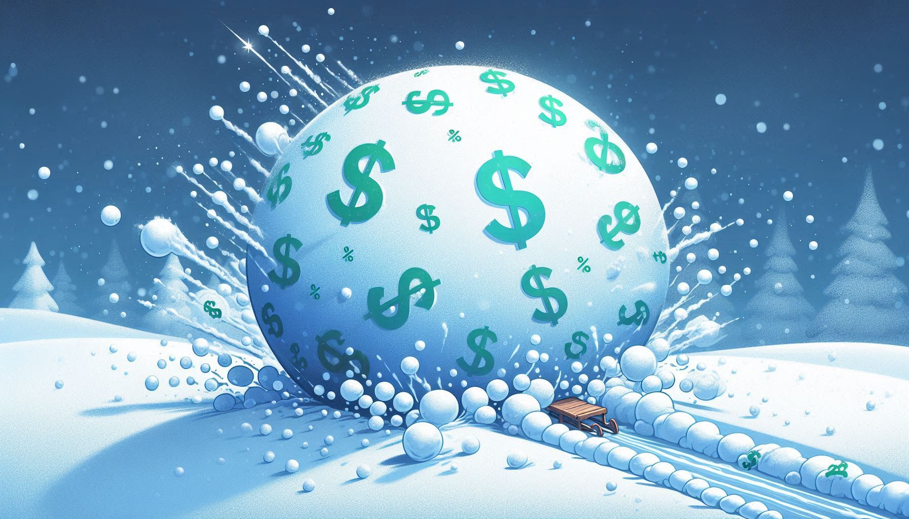

Dizem que Albert Einstein certa vez chamou os juros compostos de "a oitava maravilha do mundo". Se ele disse isso ou não, pouco importa. O fato é que esse conceito é a força mais poderosa para multiplicar o seu dinheiro ao longo do tempo.
Entender a diferença entre juros simples e compostos é o que separa quem trabalha pelo dinheiro de quem faz o dinheiro trabalhar para si.
O Que São Juros Compostos?
Popularmente conhecidos como "juros sobre juros", os juros compostos funcionam como uma bola de neve. Os rendimentos que você ganha este mês são somados ao seu capital inicial, e no mês seguinte, você ganhará juros sobre esse novo valor total.

Ou seja: o dinheiro que você ganhou "de graça" (rendimento) passa a gerar novos filhos (mais rendimento) para você.
A Diferença na Prática
Vamos imaginar que você investiu R$ 1.000,00 a uma taxa de 10% ao ano. Veja o que acontece após 3 anos:
- Ano 1: + R$ 100
- Ano 2: + R$ 100
- Ano 3: + R$ 100
- Total: R$ 1.300
- Ano 1: + R$ 100
- Ano 2: + R$ 110
- Ano 3: + R$ 121
- Total: R$ 1.331
Parece pouco? A diferença de R$ 31,00 pode parecer pequena em 3 anos. Mas em 30 anos, essa diferença se torna exponencial, transformando milhares em milhões.
O Fator Tempo
Nos juros compostos, o Tempo é mais importante do que a quantidade de dinheiro. Quanto mais cedo você começar, maior será a curva de crescimento.
A fórmula matemática explica isso: M = C (1 + i)t. Perceba que o tempo (t) é uma potência. Isso significa que dobrar o tempo não dobra o resultado — ele multiplica o resultado de forma explosiva.
Resumo
- Juros compostos são juros sobre juros.
- No curto prazo a diferença é pequena, mas no longo prazo é brutal.
- O tempo é o melhor amigo do investidor.
- Comece cedo, mesmo com pouco dinheiro.